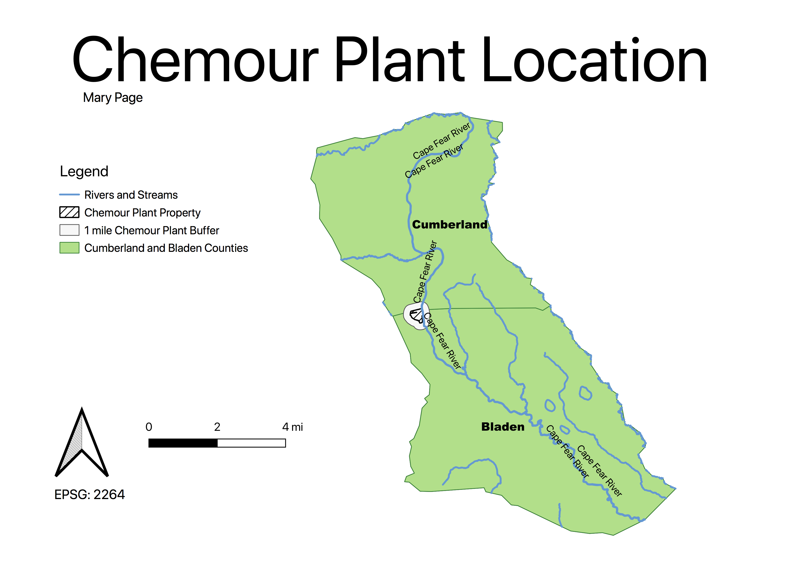

Homework 10: Geoprocessing Analysis
Mary Page
Topic: Chemours
Chemours Co. is located "off N.C. 87 about 20 minutes outside Fayetteville near the Bladen-Cumberland County line" where "More than 200 people who live near the Chemours Co. chemical factory south of Fayetteville filed a federal lawsuit against the company and its predecessor, DuPont de Nemours Inc., citing the GenX and PFAS contamination of their property and water supplies" (Paul Woolverton). "As defined by the United States Environmenta Protection Agency (EPA), "Per- and polyfluoroalkyl substances (PFAS) are a group of man-made chemicals that includes PFOA, PFOS, GenX, and many other chemicals". PFAs can have adverse effects on healthy, including "Both chemicals have caused tumors in animals. The most consistent findings are increased cholesterol levels among exposed populations, with more limited findings related to: low infant birth weights, effects on the immune system, cancer (for PFOA), and thyroid hormone disruption (for PFOS)" (EPA). These chemicals, "were found in the water supplies of communities downstream, including Wilmington" and "They also have been found in the groundwater that supplies the wells for homes, businesses, schools and other places near the plant" (Paul Woolverton). In July 2017, "The Department of Environmental Quality directed Chemours to begin conducting sampling of 14 groundwater monitoring wells that are at the Chemours facility and not used for public purposes", as "Thirteen of 14 industrial wells at the company’s Fayetteville Works facility had detections of GenX in violation of state groundwater standards. The wells tested are used for environmental monitoring at the facility and are not a source of drinking water" (NC DEQ). Therefore, "on Sept. 15. As results came in and were verified, DEQ has directed Chemours to provide well owners with bottled water when GenX is detected above the state’s provisional health goal" (NC DEQ). Chemours' current sampling plan includes "collecting samples from private wells located one mile from the property boundary in all directions. DEQ will continue to direct Chemours to expand its sampling until the edge of the contamination plume is found" (NC DEQ).
 I chose this topic for my homework because my dad is from Fayettville, NC, and all of my current family on my dad's side still resides in Cumberland, Bladen, and Sampson counties where this is occuring. Initially I wanted to attempt to plot cancer cases in the surroudning areas of the Chemours plant and Cape Fear River, however, as this situation is unfolding and developoing in real time, such data does not exist.
I chose this topic for my homework because my dad is from Fayettville, NC, and all of my current family on my dad's side still resides in Cumberland, Bladen, and Sampson counties where this is occuring. Initially I wanted to attempt to plot cancer cases in the surroudning areas of the Chemours plant and Cape Fear River, however, as this situation is unfolding and developoing in real time, such data does not exist.
My Question: How far is the Chemours plant from the Cape Fear River?
Maps:
Chemour Plant Location Map:

Geoprocessing Tools Used:
Chemour Plant Location Map with ESRI Tile:
Sources and Data :
Sources:
The Fayettville Observer "Residents near Fayettville sue Chemours, DuPont for GenX water contamination"
EPA "Basic Information on PFAS"
NC DEQ "GenX Investigation"
Data links:
Hydro Data: Rivers and Streams
NC OneMap Parcels Data (Property Lines)
NC Counties Shapefile
Bladen County Shapefile
Cumberland County Shapefile
Bladen County Parcels (Property)
Chemours Parcel (Property)
Cumberland and Bladen County Union
Cumberland and Bladen County Union and River intersection